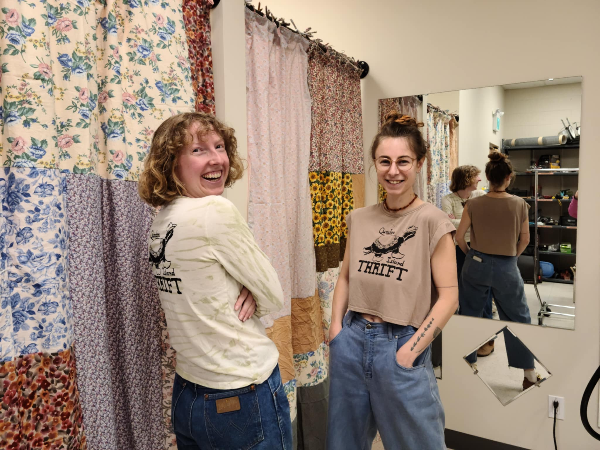
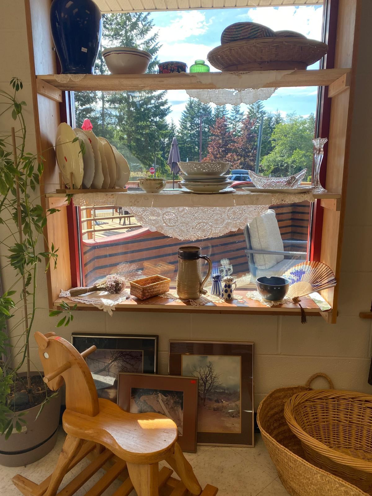
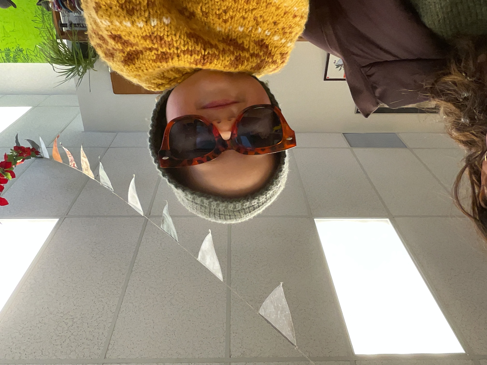
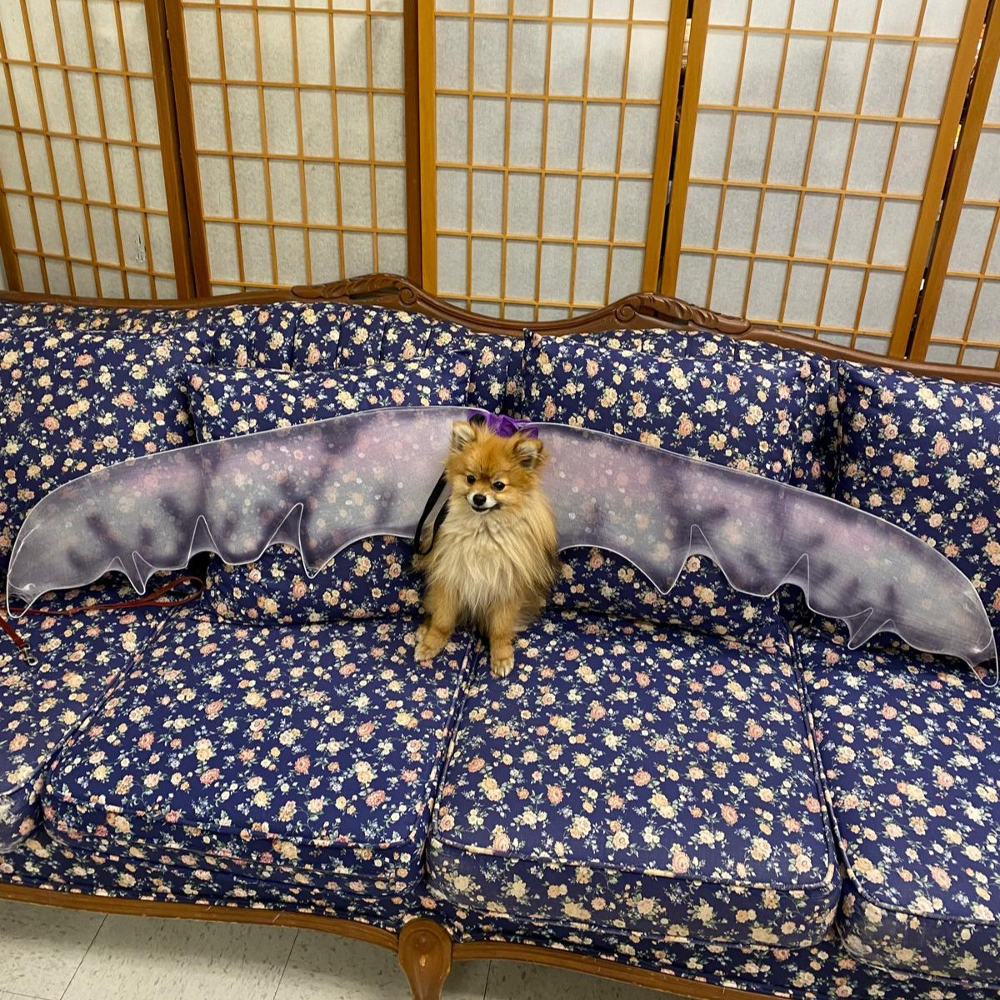
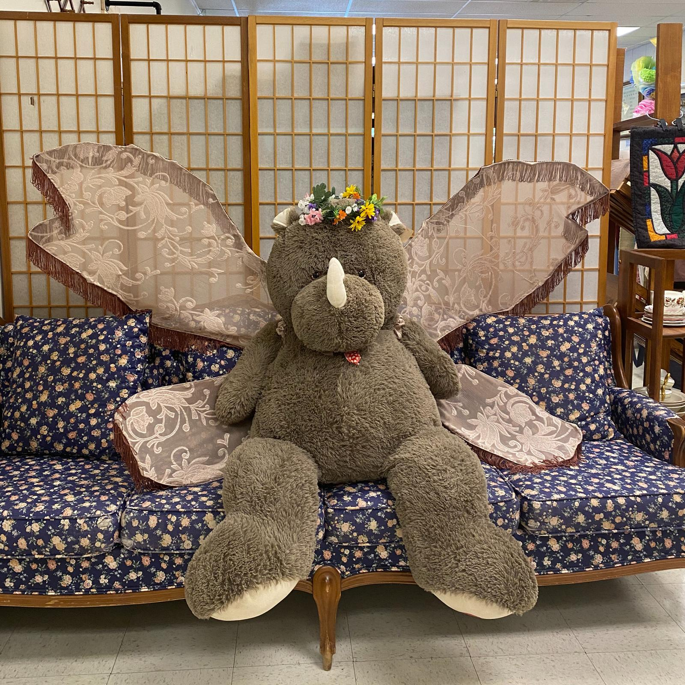
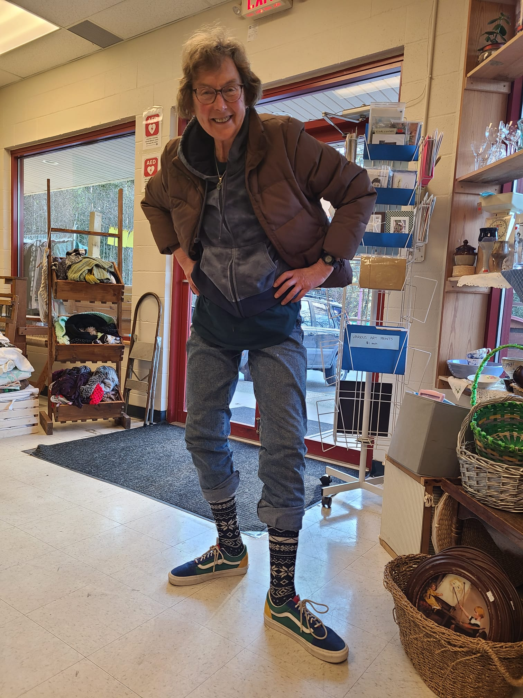
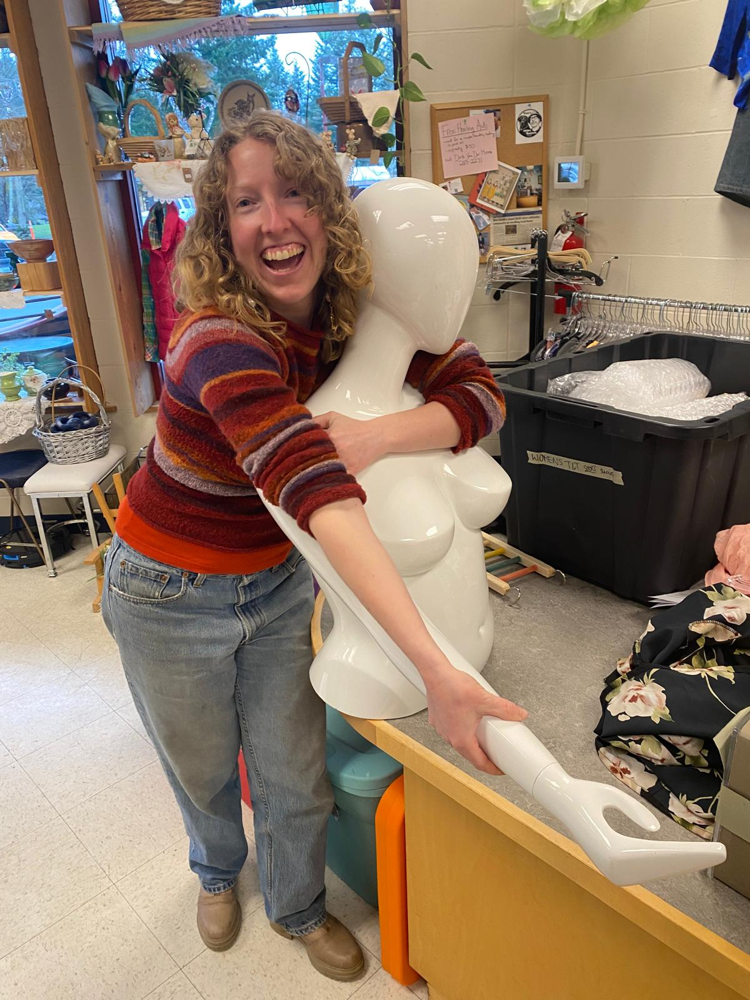
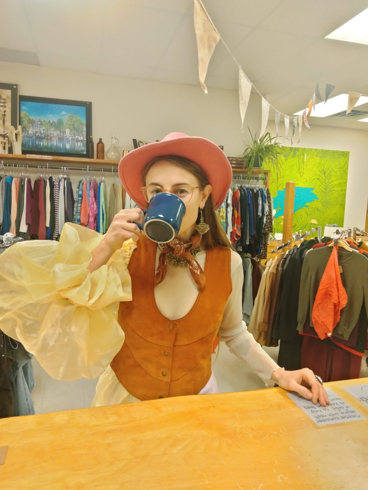
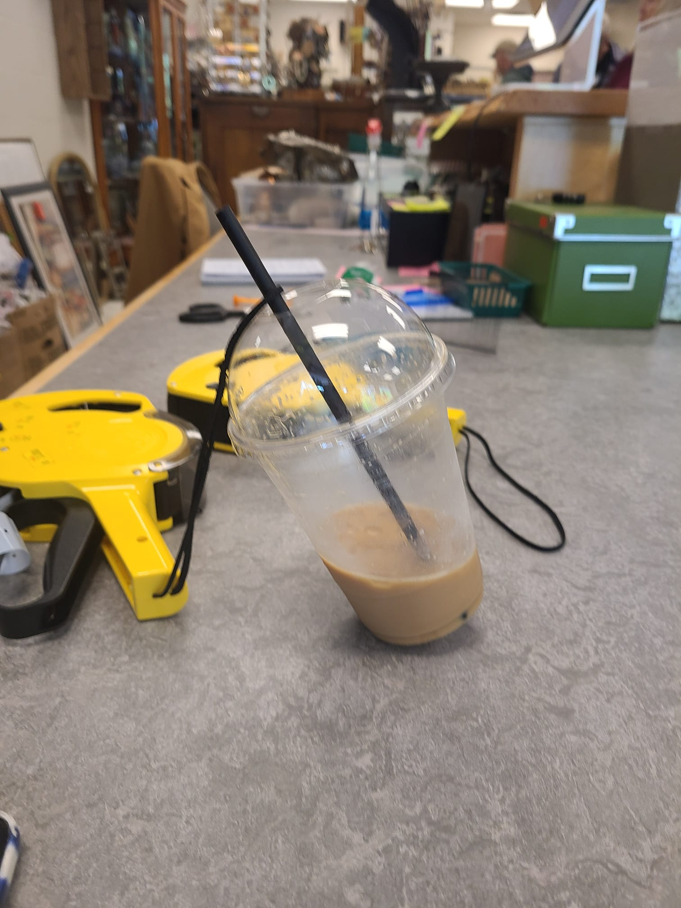
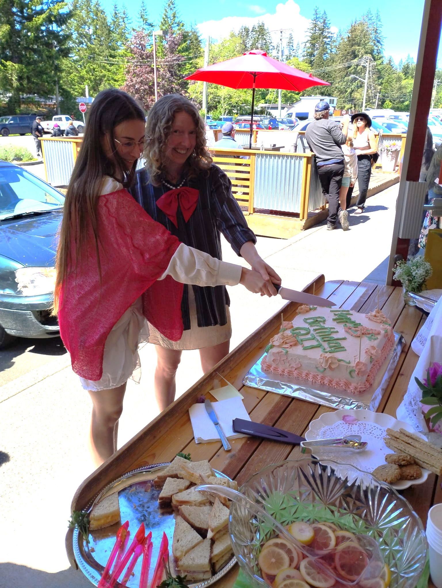

Our First Year in Review
Hello, Quadra!
It’s now been a full calendar year of Quadra Island Thrift and we could not be more thrilled with how the year shaped up! Since we are only able to exist thanks to the loving patronage and support of this amazing community, we wanted to share what you have allowed us to achieve in this first year.
Firstly, we are happy to say in our first year we sold 30,487 items! Reselling these items locally helped reduce ferry trips, gas usage, time, and furthermore, many of the types of items we sell are not readily available anywhere else on the island. We think having a local donation drop off point, and somewhere to buy essential (and non essential) items at extremely affordable prices provides a benefit to the community that cannot be overstated. On a more sentimental note, we also saw how it brought the community together. Community members of all ages gathered, from parents with babies, to teenagers, to seniors. Furthermore thanks to our pay it forward program, practically everyone who wishes is able to leave the store with something they like at an accessible price point. It’s been heartwarming to experience, as many of you have affirmed to us.

However, not all items were able to find new homes, either because they were damaged or simply didn’t sell. We did our best to re-distribute such items to those who may need them and keep them out of the landfill; over the winter we had a volunteer who picked up clothing weekly and took it over town to distribute between shelters, harm reduction sights, and the women' s transition centre. We also worked with our local ICAN food distribution program to distribute warm layers and clothing on the island. Items we simply don’t sell like child and adult diapers, period products, and other personal care products we were able to donate to the foodbank for redistribution. Ceramics that didn't sell we gave to Elayna and her mosaic group. We are now saving damaged linens for a volunteer to take to MARS wildlife rescue. We are always looking for ways to keep things out of the landfill, so if you think you have a use for items we may be getting rid of, please do not hesitate to reach out!

On top of being able to offer goods and services to locals, we were also able to generate enough proceeds through sales to make some financial donations back to our community. After two rounds of seeking community input—a survey where locals could suggest causes to donate to, and then after we narrowed these down, an in-person vote—we were able to donate over $2,100 to the Children’s Centre’s new roof, over $1,300 to our local foodbank, and over $500 to Kid’s Pottery with Katie. These sums were a combination of funds we set aside from our first year’s income, excess funds in our pay it forward program, as well as 100% of the proceeds from our May 16th anniversary party.
For those who have been in the store, you will know about our “pay it forward” program, a community cash pool which anyone can contribute to, and any one can access to help pay for their purchases. Aside from its in-store use, in 2025 alone the extra change from the pay it forward program allowed us to donate $620 worth of gift cards to locals which we distributed through the local food bank and Christmas community lunch.

We were also happy to be able to collaborate with and support some of the incredible already existing community events and initiatives. We were able to help in small ways like advertising for and closing during some of our traditional Quadra events like the May Day parade and the Giant Garage sale, as well as more substantial contributes like selling socks for literacy (a fundraiser for Quadra Literacy) over the holidays and again now for summer, and hosting a fundraiser to help ICAN cover the cost of their community fridge. We recently contributed to a raffle to raise money for the Quadra Senior Housing, and we’ve been able to give large gift cards to locals who have lost their belongings in emergencies. Perhaps our favourite, last summer we hosted a “zucchini library” where locals could leave their oversized zucchinis so kids without gardens could participate in the zucchini race at the harvest happenings fall fair.


While we weren’t able to quite pull off all of our upcycling aspirations, we did manage some with the help of some of our incredible volunteers. Aside from our merch clothing which we hand silkscreen onto donated clothing, we also had a volunteer working for months over the winter to meticulously mend wool sweaters. We had a volunteer do some tie-dying for us to give some older items a bit of a glow up and a chance at new life! Regulars know we didn’t get much of a chance to use our in-store loom or sewing machine, but our upcycling dreams live on (which we’ll be doing from home), and are part of what we are excited for in this coming year!

Speaking of this coming year, we’d love to share a few more of our goals with you. While we plan to continue much of what we have already been doing, now that the business side of things is relatively established, we look forward to focussing on more creative endeavours. We intend to do more upcycling and mending ourselves, we have plans to expand our merch line, and perhaps most excitingly, we are planning an upcycled fashion show for spring 2027. (Please feel welcome to get in touch with us if you think you might be interested in participating in any way!) We are also super excited to be funding a youth upcycling course this summer called Thrift 2 Fashion, (register for free before July 14, 2026 at https://quadrarec.recdesk.com/Community/Program/Detail?programId=171)!
We say it a lot but it bears repeating; we are ceaselessly humbled and grateful for the endless support of this community. Whether you donate, shop, or simply offer us words of support, your contribution is deeply appreciated. And a special shout out to our volunteers: Adrianne, Anita, Barry, Cec, Deanna, Erin, Elizabeth, Liz, Shilo, Sue, Zale, and all of the other friends, family, and fellow community members who contribute regularly to help us keep this great clock ticking, we truly could not do it without you!
If you’d like to contact us regarding any of this or anything else, as always, please feel free to send us an email quadraislandthrift@gmail.com or come talk to us in person!



